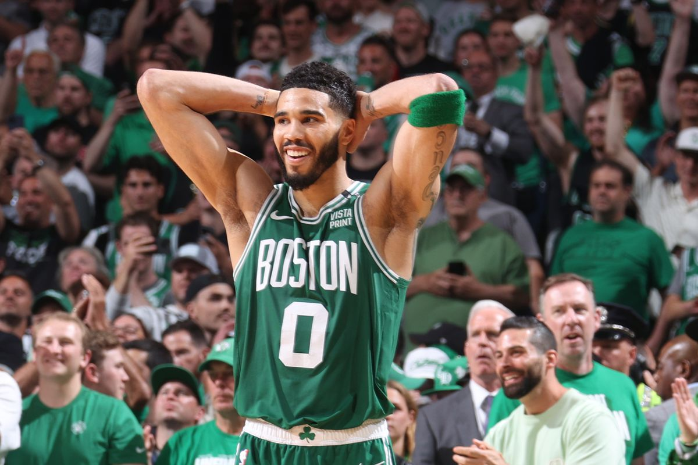

Boston Celtics
The Boston Celtics entered the playoffs as the top seed in the Eastern Conference, boasting a strong core of Jayson Tatum, Jaylen Brown, and Kristaps Porziņģis. The team also features Jrue Holiday and Derrick White, contributing to their defensive and offensive versatility. After defeating the Orlando Magic in the first round, the Celtics are now facing the New York Knicks in the semifinals. Despite a regular-season sweep against the Knicks, Boston lost Game 1 in overtime, highlighting the competitive nature of the series.
Cleveland Cavaliers
The Cleveland Cavaliers, under the guidance of Coach Kenny Atkinson, who was named NBA Coach of the Year, have had a strong season, finishing with a 64–18 record. The team is led by Donovan Mitchell, Darius Garland, and Jarrett Allen. However, injuries to key players like Evan Mobley and De'Andre Hunter have impacted their playoff performance. After sweeping the Miami Heat in the first round, the Cavaliers are currently facing the Indiana Pacers in the Eastern Conference Semifinals, trailing 0–1 in the series.
New York Knicks
The New York Knicks have made significant strides in the playoffs, advancing to the Eastern Conference Semifinals after defeating the Detroit Pistons. Led by Jalen Brunson's scoring and playmaking, the team has been bolstered by the acquisitions of Mikal Bridges and Karl-Anthony Towns. In Game 1 against the Boston Celtics, the Knicks secured a 108–105 overtime victory, with Bridges making a crucial defensive play to seal the win.
Indiana Pacers
The Indiana Pacers have been a surprise contender in the playoffs, advancing to the Eastern Conference Semifinals after a strong regular season. Tyrese Haliburton leads the team with his exceptional playmaking, supported by players like Pascal Siakam, Bennedict Mathurin, and Myles Turner. The Pacers secured a comeback victory in Game 1 against the Cleveland Cavaliers, capitalizing on the Cavaliers' injury woes.